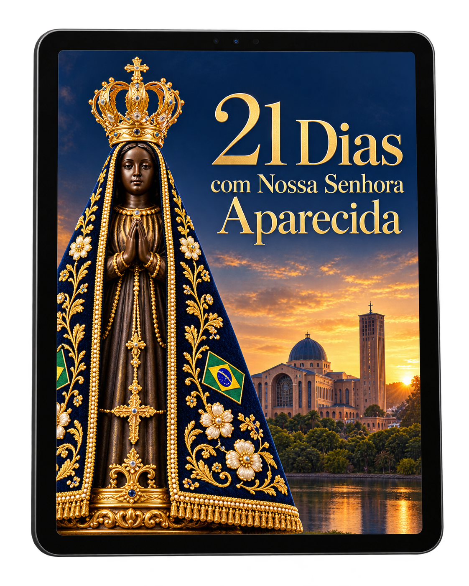
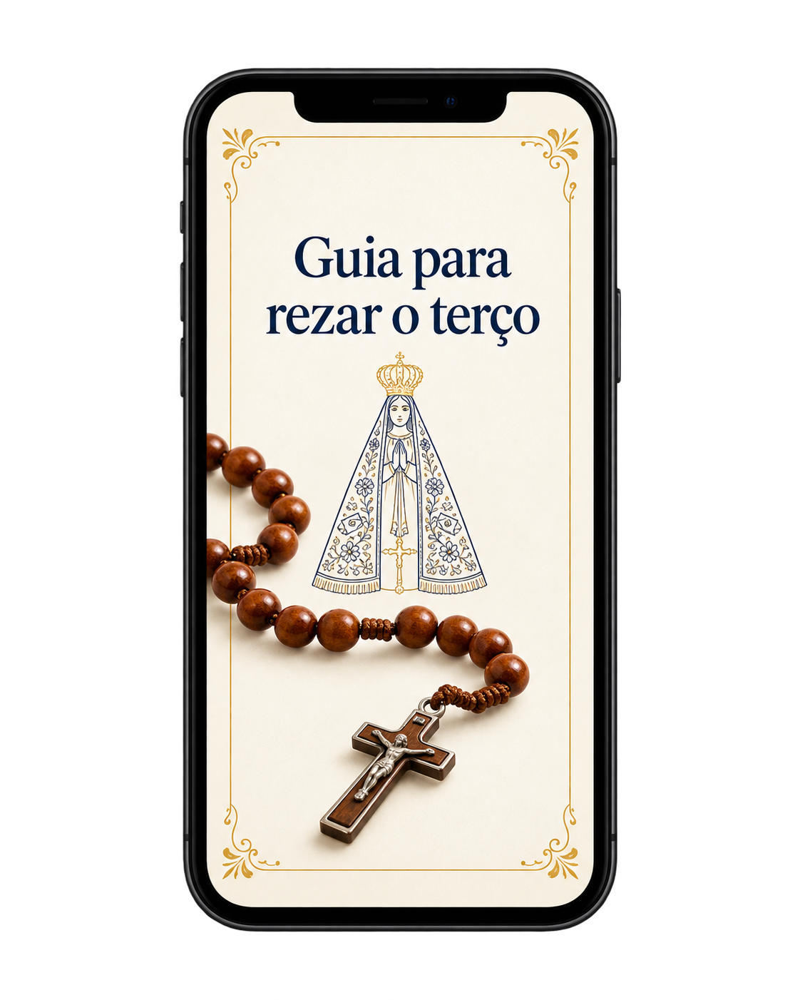
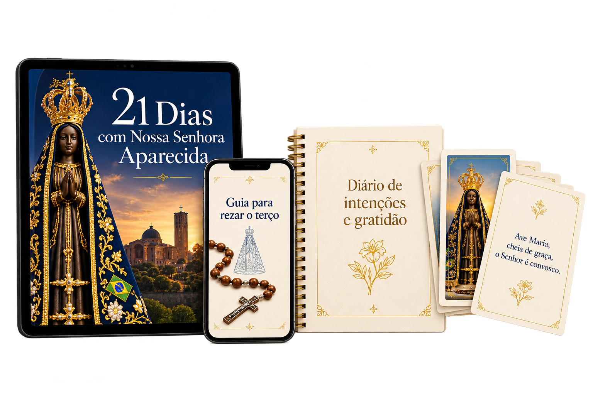

01
Preparar o coração
Dias 1 a 7
Aproxime-se de Deus, coloque suas intenções e disponha-se a viver estes 21 dias.
Devocional e materiais digitais
21 dias de oração e reflexão para meditar a Palavra de Deus e apresentar suas intenções.
Quero começar minha jornadaEntre os compromissos do dia, reserve um tempo para rezar, agradecer e escutar a Palavra.
Dias 1 a 7
Aproxime-se de Deus, coloque suas intenções e disponha-se a viver estes 21 dias.
Dias 8 a 14
Medite a Palavra, reze o terço e entregue suas alegrias, dificuldades e sonhos.
Dias 15 a 21
Fortaleça sua confiança em Deus e procure viver a Palavra no seu dia a dia.
Materiais digitais pensados para ajudar você nesta jornada com Nossa Senhora Aparecida.

Reflexões diárias com passagens bíblicas e orações.

Passo a passo com orientações simples.
Um espaço para registrar suas intenções, agradecimentos e aprendizados.
Para levar sua devoção para onde estiver.
Faça um momento de silêncio e coloque-se na presença de Deus.
Medite a passagem bíblica do dia.
Reflita com calma e deixe que a Palavra fale ao seu coração.
Converse com Deus e apresente suas intenções a Nossa Senhora.
Anote o que deseja entregar, agradecer e confiar.
Procure colocar em prática a Palavra no seu dia a dia.

Ao adquirir os materiais, você ajuda com os custos de produção, manutenção e divulgação de novos conteúdos que estimulem a fé e o conhecimento da Palavra de Deus.
Por apenasR$37
Após a confirmação do pagamento, você recebe por e-mail o acesso para baixar todos os materiais em formato digital (PDF).
O ideal é seguir um dia após o outro, mas você pode fazer no seu ritmo. O importante é perseverar na oração.
Não. O guia para rezar o terço explica passo a passo, de forma simples, para quem está começando.